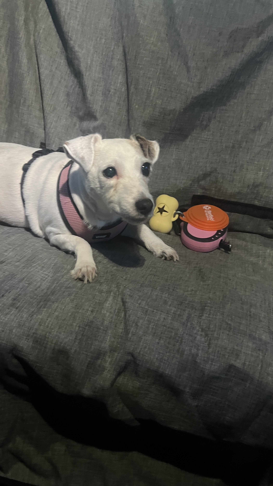
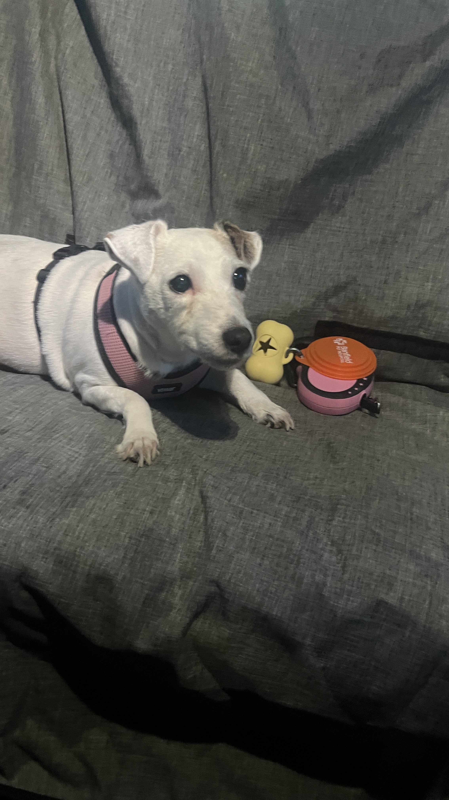

Behind the Code:
The Programmer's Path

Welcome Aboard!
I'm a Full Stack Developer with experience in both
application and presentation layers.
Serving as an officer in the Peruvian Navy for 13 years was
a transformative and enriching experience, fostering the
development of essential leadership skills and a
comprehensive security mindset. Commanding coastal service
ships, numerous tactical operations were led and supervised,
guiding teams through critical missions and extended operations
across various ports and cities. This period highlighted
exceptional organizational and decision-making abilities in
high-pressure environments.
Sea deployments were coordinated and executed,
involving extensive navigation periods and port calls in
both national and international locations. Collaboration with
multidisciplinary teams ensured the successful
execution of missions and the achievement of strategic
objectives.
For two years, the role of Port Captain of Chancay was held,
overseeing the administration of the Coast Guard Service in a
locality where South America's largest megaport construction
project was developed. Responsibilities included enforcing
regulations related to human life safety, environmental
protection, and natural resource conservation, as well as
suppressing all illicit activities within the jurisdiction.
After permanently relocating to Houston, TX, in The United States, having a highly developed security mindset, I expanded
my knowledge by obtaining a certification in Cybersecurity
with Google. This allowed me to apply naval principles
such as defense in depth, attack surface reduction,
and the principle of least privilege. The certification
provided me with advanced skills in identifying vulnerabilities,
implementing robust security measures, and ensuring the integrity
of critical data.
Additionally, I hold certifications as a IBM Data Analyst
and in Digital Marketing and E-commerce from Google. These credentials
empower me to harness advanced analytical tools to derive
actionable insights from data, thereby enhancing my clients' sales
performance. By leveraging data segmentation in social media,
email marketing, and other channels, I can craft targeted strategies
that drive engagement and conversion. Currently, I am enrolled in the Data Science program with IBM to further enhance my analytical skills and gain a deeper understanding of algorithm behavior and design.
Lastly, as you can see, the sea has always been one of my greatest passions. A few years
ago I decided to perfect my diving skills by becoming certified
as a PADI Advanced Open Water Diver. Additionally, I aspire to
participate in underwater photography and videography projects in
the future.
A New Chapter:
Living The Dream

 
